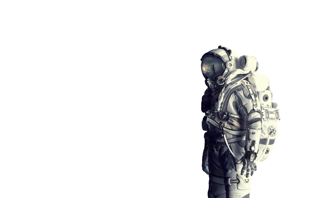
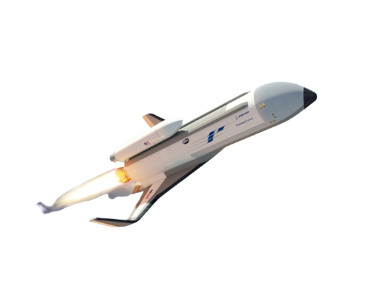
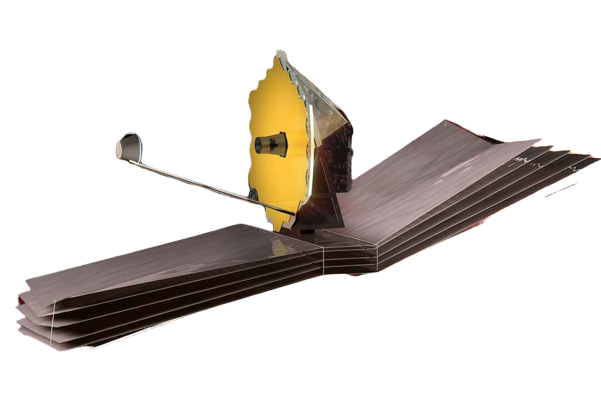
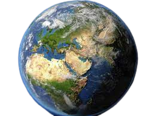

El espacio exterior, espacio vacío, espacio sidéreo, espacio sideral o simplemente espacio
se refiere a las regiones relativamente vacías del universo fuera de las atmósferas de los cuerpos celestes.
El 'espacio exterior' comienza a 100 km de distancia de la Tierra, donde desaparece la cáscara de aire que envuelve nuestro planeta.
Sin aire para esparcir la luz solar y producir un cielo azul, el espacio se ve como un lienzo negro salpicado de estrellas.
Por lo general, se piensa que el espacio está completamente vacío, pero eso no es verdad. Los vastos trechos entre las estrellas y los planetas están llenos de enormes cantidades de gas y polvo,
diseminados de manera casi imperceptible. Incluso las partes más vacías del espacio contienen al menos unos cuantos cientos de átomos o moléculas por metro cúbico.
El espacio también está lleno de varias formas de radiación peligrosa para los astronautas. Gran parte de esta radiación infrarroja y ultravioleta proviene del Sol.
Desde distantes sistemas estelares llegan rayos X, rayos gamma y rayos cósmicos (partículas que viajan a una velocidad cercana a la de la luz) que poseen mucha energía.
